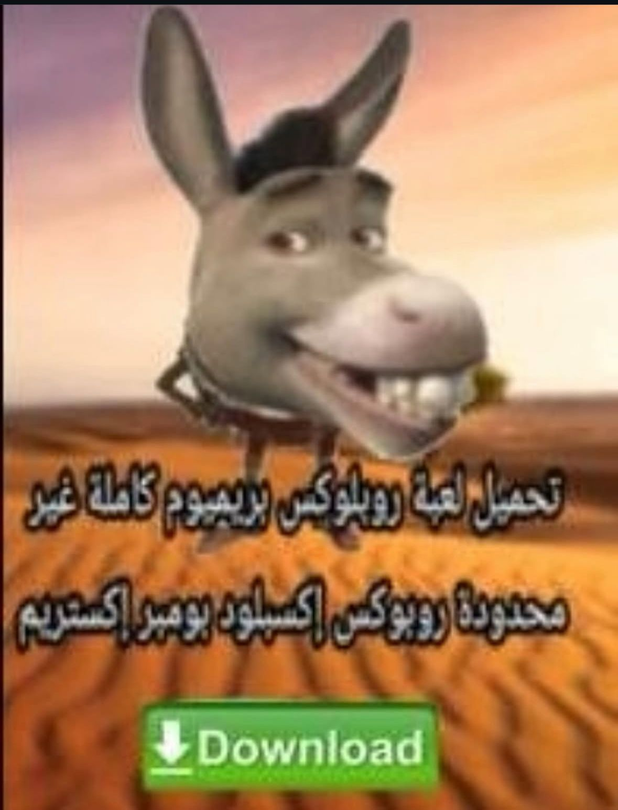

Dale click muejej
أحبك يا ناتاليا، بالإسبانية وبكل اللغات.
Te amo mucho, cada momento contigo lo aprecio. Día tras día, me despierto cada mañana contigo en mi mente, la cancion de el dia de hoy es "Corazon Atomico" de Zoe, y al igual que la letra me estoy volviendo loco por ti, quiero que acaricies mi alma y suavizes mi ser.
Te amo con cada molécula de mi ser, con cada latido me enamoro mas de ti, siento que siempre has tenido un cachito de mi alma que no sabia que me faltaba y creo que por eso te necesito tanto como un ciego a su bastón, como el náufrago a la orilla que aún no ve, como la noche a la luna, como el corazón a su latido, como el viajero a su brújula, como la sombra a la luz y como el frío a un abrigo.
Quiero pasar el resto de mis dias contigo, si algun dia te preguntas si alguien piensa en ti al escuchar una cancion de amor, ver una pelicula de romance o leer algun libro de amor quiero que sepas que soy yo, hoy, mañana y siempre, siempre estare para ti y por el resto de mis dias te prometo que te amare de la forma mas linda y pura posible. No solo te amo Naty, te adoro, y lo siento desde lo mas profundo de mi corazon y de mi alma.